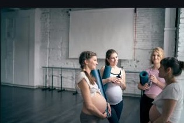

Advocacy Activities

- Early Parenthood Awareness Seminar
- Responsible Decision-Making Discussion
- Youth Reproductive Health Education
- Parenting Responsibilities Forum
- Youth Advocacy Campaign
UPCOMING ADVOCACY ACTIVITIES
Our advocacy activities aim to educate young people and encourage meaningful conversations about early parenthood.
Through seminars, discussions, and educational campaigns, we hope to promote awareness, responsibility, and understanding.
Our Goal
To create a community where young people can access reliable information, understand the challenges of early parenthood, and make informed decisions about their future.